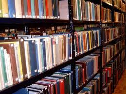
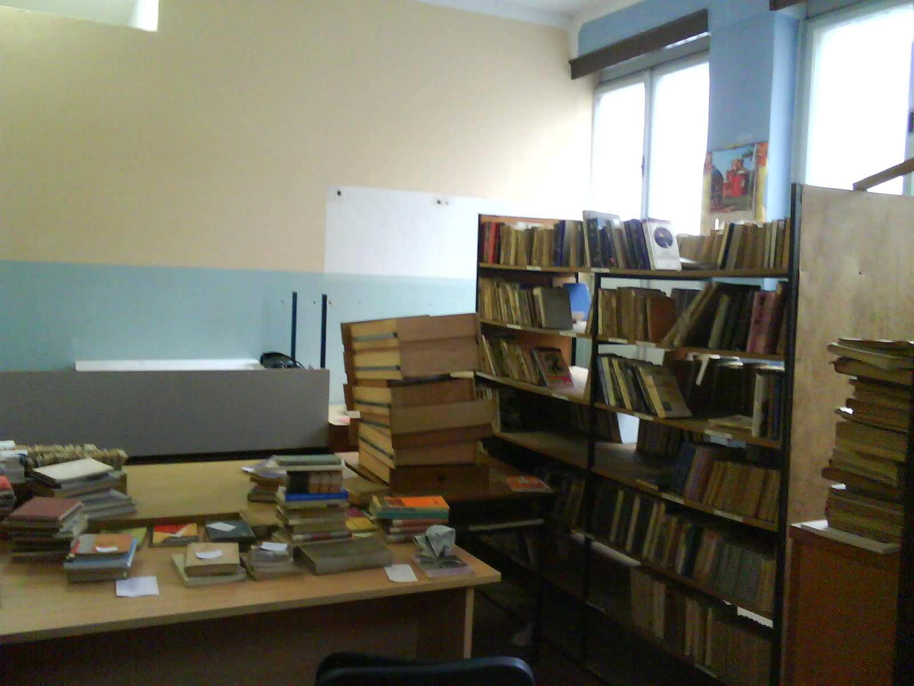
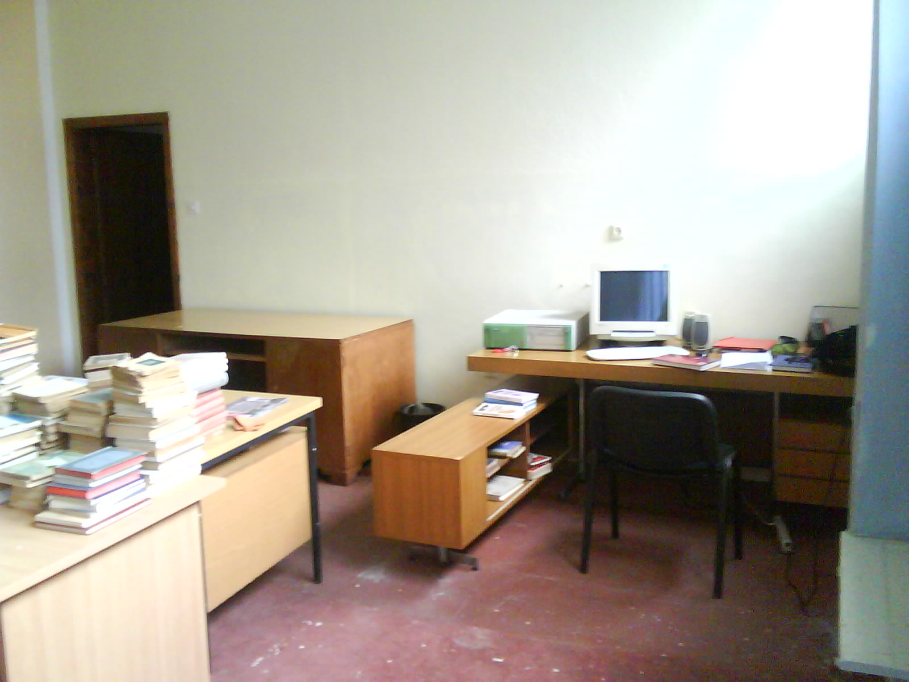
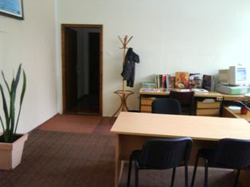
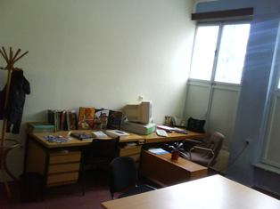

Шта је школска библиотека?
Она је место библиотечко-информационе, васпитно-образовне и културне дјелатности сваке школе.У њој се прикупља, обрађује и даје на коришћење књижна и некњижна грађа ученицима и наставницима.
Библиотека Гимназије "Јован Дучић" у Добоју
 Мисија и Визија
Мисија и Визија
РАДНО ВРИЈЕМЕ
ЛОКАЦИЈА
УСЛУГЕ
ОСОБЉЕ
БИБЛИОТЕЧКИ ФОНД
ПРОСТОР
Континуирано снабдијевање тачним информацијма потребних корисницима, у нашем случају наставном особљу и ученицима.
Наша библиотека је мјесто које "подстиче читање као сазнајни процес", развија истраживачки дух и способности, и критичко мишљење код ученика, даје подршку у стручном усавршавању наставника и стручних сарадника школе.
Захваљујући садржајима које нуди корисницима, љубазности и стручности библиотекара,
*библиотека је омиљено мјесто за провођење слободног времена,
*прво мјесто гдје ће се обратити за потрену информацију за напредовање на личном и професионалном плану.
Нaстава у Гимназији се одpжава у двије смјене, од 7.00 до 13.30 и од 13.30 до 19.00.
Узимајући у обзир да у библиотеци ради један библиотечки радник задужен за библиотечке послове и рад са корисницима, овако организовано радно вpијеме библиотеке je максимално прилагођено свима.
| ПОНЕДЈЕЉАК | УТОРАК | СРИЈЕДА | ЧЕТВРТАК | ПЕТАК |
| 07.00-14.00 | 07.00-14.00 | 07.00-14.00 | ||
| 13.00-19.00 | 13.00-19.00 |
Школска библиотека омогућава доступност информација преко библиотечких извора свог фонда, који су доступни за коришћење у читаоници (референсна библиотечка грађа) и ван просторија библиотеке на одређени временски период.
За сада су то само извоpи инфоpмација у књижном облику, опpемљеност pачунаpима за коpиснике и интеpнет веза у библиотеци, омогућиће пpиступ pазновpснијем садpжају и већем бpоју инфоpмација, уз стpучну помоћ библиотекаpа пpи њиховом одабиpу и вpедновању. Библиотека има успостављена Правила задуживања и коришћења библиотечке грађе).
Од фебруара ове године у библиотеци ради дипломирани библиотекар-информатичар. Током радног времена велика пажња је усмјерена на рад са корисницима (издавање књига, препорука литературе, помоћ матурантима у изради завршних матурских радова..), али се ни библиотечки послови не запостављају.
 *Чини га преко 7000 јединица за сада само књижне гpађе, око 50 наслова часописа разних садржаја, референснa збирнa , збирку старе књиге . У изради је електронски каталог који би омогућио претраживање по разним критеријумима, а сада издања која се налазе у нашој библиотеци можете видјети ОВДЈЕ. .
Однедавано, простор библииотеке је подијељен на читаоницу и просторију за смјештај књижне грађе. *Читаоница је намијењена за индивидуални и групни рад и истраживање, а уједно се користи и као простор за издавање књига и стручни рад библиотекара.
|  |  |  |
|  | 
| 
|